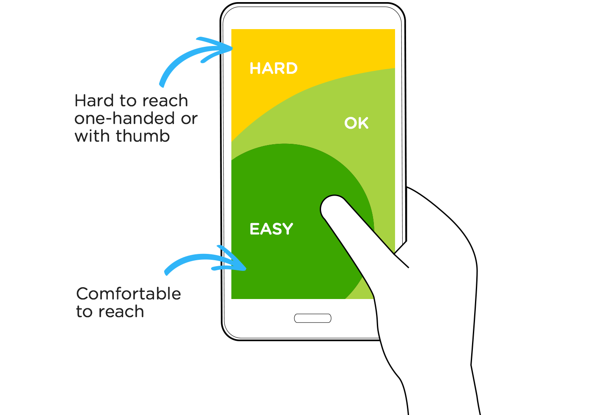

A01: What are Breakpoints
Devices don’t come in fixed sizes such as extra-small (wearables), small (smartphone), medium (tablet), large (laptop), and extra-large (desktop). Yet, this is how emerging designers approach designing for the web. They start designing using the size of their own device and stop there. On occasion an emerging designer will create a second design for a different sized device. Notice I wrote create a second design. When someone visits a website the experience—both functionally and visually—should be seamless across devices. This is a vastly different concept needing a unique design approach, not simply creating a second design.
To keep visual designs seamless across devices and operating systems (think Android or iOS), the industry has shifted towards creating Design Systems, not web pages or apps. A well thought out design system contains the elements that construct a website or app such as a search function, navigation, headlines and images. Basically, designing a website from the inside out. This approach allows the element to be seamless across multiple devices and platforms.
However, what do design systems have to do with breakpoints and what are breakpoints? We will talk a lot about design systems as the semester goes along. For now, all you need to know is that you don’t design for specific devices, you design for content and you need to identify breakpoints for the content, not device sizes! So don’t think in terms of webpages or devices, think of content types when determining breakpoints.
So what is a Breakpoint? While not a technical answer, take the term literally for a clue. You identify the breakpoint of the content such as a three column gird containing text by determining the size of the open browser window when the content breaks. For example, at what point does the three columns of text break—become difficult for the site visitor to read. When the content breaks that is the point where there needs to be a breakpoint (adjustment) to the design. Notice I wrote adjustment not new design.
Identifying Breakpoints
There are no hard and fast rules to determining breakpoints. Don’t think small, medium, large or phone, tablet, desktop. Focus on the content types. Typography (textual content) and its readability is great for determining breakpoints. As you learned in you beginning typography course, there are ideal line reading lengths and other things to consider when reading long form text. Simply trying to read a webpage’s text while adjusting your browser window or using a tool like Brad Frost’s Ish which I have setup for you on the class blog is a good place to start.
Another important type of content to consider are micro-interactions like buttons and forms. On a non-touch device, you will most likely have a mouse. The precision of a mouse cursor makes it relatively easy to click on a button if you have designed clearly enough for the user to identify it is a button. Precision is lost when the site visitor is using a touch device. Buttons and other input types like forms will need to be bigger to accommodate human fingers. However, the location of the button needs to be taken into consideration. When someone is using a mouse, they generally have access to the entire screen. When someone is holding a phone in their hand, they may only have easy access to a very limited area of the screen with the use on only one hand. Throw in larger hand held touch devices like tablets and you begin to understand all the decisions designers need to make.

Another content type easy to identify breakpoints for are images. When you crop an image suitable for a wide screen you can’t assume it still works when scaled to fit within a skinnier screen width. A good example of this is an image of President Barack Obama being sworn in. A wider version lets the viewer see Justice Kennedy, and President Obama with his family looking on. On a skinny screen the image is scaled to fit and the content breaks making it hard to see details of President Obama, the original intent of the image. This is where a breakpoint can be inserted that art directs the image to be cropped into President Obama and Michelle Obama to retain detail. Another breakpoint can be added to adjust the design to further crop into President Obama.

Your Task for the Day
Now that you know what breakpoints are, I want you to review several websites and identify one element within one website that has three or more breakpoints. You must demonstrate the element’s breakpoints by recording the change using QuickTime to create a .mov file or create a screenshot of each breakpoint. You will upload either one QuickTime movie or 3 screenshots via the DropBox link by the end of class that demonstrate the changing breakpoint. You can not use the websites listed above.
Tip
Don’t over think this. As I mentioned there are no perfect examples. Simply visit a website and resize the browser window and look for an element that changes at least three or more times. The changes may be slight, so don’t worry if you can’t find extreme examples like I have shown you.
Grading
This assignment will be worth 5 points and is due at the end of class. Name the files exactly as follows (all lowercase with hyphens and no blank spaces) what-are-breakpoints-firstname-lastname-0(1-3).(jpg, png,mov,mp4), and upload the file via the DropBox link by the end of class.
- 4–5: You demonstrated 3 breakpoint changes.
- 1–3: You demonstrated 1 or 2 breakpoint changes.
- 0: You did’t turn in the assignment.